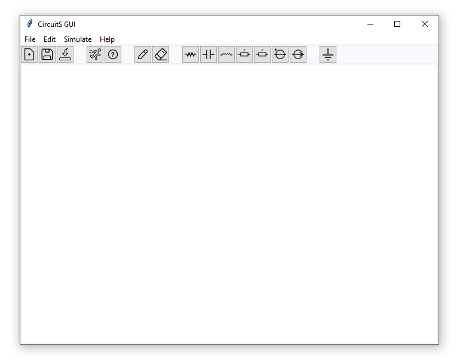
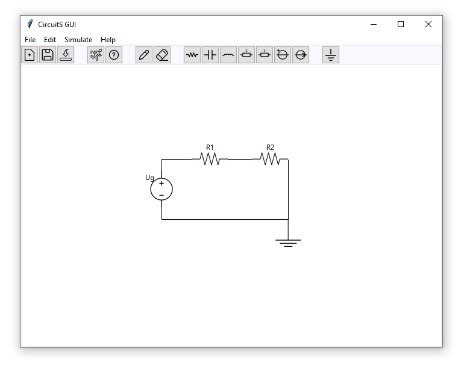

GUI Extension
CircuitS offers a simple graphical interface for creating simple circuits.
This extension is optional and is not required to run CircuitS. Installation can be found here.
Running
GUI extension can be started by simply running the gui/main.py file:
python gui/main.pyFeatures
Main window is composed of three sections:
- Menu bar
- Toolbar
- Drawing canvas

Toolbar has the following features, in order:
- Creating a new circuit - clears the canvas
- Saving the current circuit localy (.circS Files)
- Loading a saved CircuitS file
- Running the simulator
- Help dialog
- Drawing lines to connect the elements
- Erasing elements on the canvas
- Adding elements on the canvas: Resistors, Capacitors, Inductors, Impedance, Admittance, Voltage generators, Current generators, Ground
Creating a circuit
Let's create a simple voltage divider by adding elements and connecting them with lines:

Every circuit should have at least one ground element on the canvas.
We can also rotate elements by hovering our mouse over them in the canvas and pressing "R" on the keyboard.
To run the simulation we can go to simulate->run. If CircuitS is not in the same directory as the gui script, then we need to find it on the filesystem.
Results of MNA equations are displayed in the same simulation window.
Each element has two terminals (nodes) that can be seen by pressing on the element in the canvas.